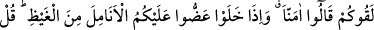
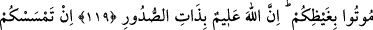
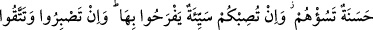
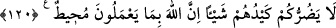

EHL-İ KİTABIN İKİ YÜZLÜLERİ
119. İşte siz öyle kimselersiniz ki, onlar sizi sevmedikleri halde siz onları
seversiniz. Siz, bütün kitaplara inanırsınız; onlar ise, sizinle karşılaştıklarında
“İnandık” derler. Kendi başlarına kaldıklarında da, size olan kinlerinden dolayı
parmaklarının uçlarını ısırırlar. De ki: Kininizden (kahrolup) ölün! Şüphesiz Allah
kalplerin içindekini hakkıyla bilmektedir.
120. Size bir iyilik dokunsa, bu onları tasalandırır; başınıza bir musîbet gelse,
buna da sevinirler. Eğer sabreder ve korunursanız, onların hilesi size hiçbir zarar
vermez. Şüphesiz Allah, onların yaptıklarını çepeçevre kuşatmıştır.
İşte siz ey inananlar, bunları dost edinmekte hatalı davranan kimselersiniz; onları
seversiniz. Halbuki aranızdaki dînî ayrılıktan dolayı onlar sizi sevmezler. “Bütün
kitaplara” kitap cinsinden olan her şeye “inanırsınız.” “Siz onların kitabına inandığınız
halde sizi sevmezler; peki size ne oluyor da onlar, sizin kitabınıza inanmadıkları halde
onları seviyorsunuz,” demektir. Bu ifade, kâfirlerin bâtıl inançlarına, müslümanların hak
olan inançlarından daha sebâtkâr olduklarını belirterek müslümanları azarlamaktadır.
“Onlar sizinle karşılaştıkları zaman” ikiyüzlülük ederek “inandık” derler, “ama
kendi başlarına kaldıklarında” birbirlerinin yanında iken size karşı duydukları öfkeyi
yok edip kendilerini avutacak sadra şifâ bir şey bulamamaktan ötürü kızıp köpürerek
“size karşı öfkelerinden parmak uçlarını ısırırlar.”
İmam Fahreddin Râzî şöyle diyor: Âyetin mânası şudur: Kâfirler birbirleri ile
başbaşa kaldıkları zaman mü’minler hakkında müthiş kızgın ifadeler kullanırlardı. O
kadar ki, bu şiddetli kızgınlık onları parmaklarını ısırma raddesine getirirdi. Nitekim
herhangi birimiz de istediği şeye ulaşamadığı için şiddetli bir öfkeye; büyük bir
üzüntüye kapıldığında aynı şeyi yapıyoruz. Bu işi, daha çok, kızgınlık krizine tutulanlar
yapınca, “parmağını ısırmak” kızgınlıktan kinâye olarak kullanılmaya başlandı.
Neticede, kızgın kişi hakkında “gayzından parmağını ısırıyor” denildi. Aslında
parmağını ısırması mevzu bahis değildi.
Kâfirlerin böyle, şiddetli bir öfkeye kapılmalarının sebebi; mü’minlerin birbirlerine